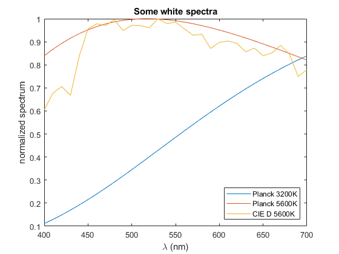

PlanckSpectrum
Navigate to: Home | Alphabetic list | Grouped list | Source code: PlanckSpectrum.m
Computes Planck's blackbody spectrum as function of temperature and wavelength
Contents
Syntax
function rv = PlanckSpectrum(lam_vec, T, opts)
Input Arguments
- lam_vec: vector of double, positive, strictly ascending. Wavelengths of the resulting spectrum
- T: scalar positive double. The absolute temperature in Kelvin. May be Inf, then, with 'normalize' to 'localpeak1' returns the high temperate asymptotic shape.
- opts: Name-value pairs:
| Name | Type | Value | Meaning |
| 'normalize' | string | 'globalpeak1' (default) | scaled such that global peak would be 1.0 even if outside lambda range. Only for constant index |
| 'localpeak1' | scaled such that the peak value for the given lam_vec is 1.0, Note: Not exactly identical if global peak is in range, due to discretization | ||
| 'localflux1' | scaled such that integral over given lambda range is 1.0 | ||
| 'radiance' | scaled such rv is blackbody spectral radiance, W/(wlu m²sr), where wlu is the length unit (usually nm) | ||
| 'basic_radiance' | scaled such rv is blackbody spectral basic radiance, W/(wlu m²sr) | ||
| 'exitance' | scaled such that rv is blackbody spectral exitance, W/(wlu m²) | ||
| 'wavelengthUnit' | positive real scalar | 1e-9 (default) | lam_vec given in nm, returned spectrum is W / (nm m² sr) or W / (nm m²) rv.XYZ will be CIE XYZ values X, Y, Z, x, y |
| 1e-6 | lam_vec given in µm, returned spectrum is W / (µm m² sr) or W / (µm m²) | ||
| 1 | lam_vec given in m, returned spectrum is W / (m m² sr) or W / (m m²) | ||
| 'n_refr_const' | positive real scalar | 1.000277 (default) | standard air |
| 1.0 | vacuum | ||
| any other value | some constant index medium | ||
| 'n_refr_table' | A valid spectrum, i.e. struct with appropriate fields lam and val | ||
| 'n_refr_func' | function handle with signature: [n, dn_dlambda] = n_refr_func(lambda) | @(lambda) NaN; (default) | Not used |
| any other function | Dispersion of the embedding medium. Takes precedence over 'n_refr_table' and 'n_refr_const' NOTE: For dispersive index as function of wavelength, the wavelength is interpreted as wavelength within the medium (!!). For gases like air or argon, with pressure near atmospheric, the difference is negligible. For the (academic) case of blackbody radiation in an optically dense medium, where the dispersion curve is given as function of wavelength in vacuum or air, that function needs to be converted to a function of wavelength in medium before passing it as a parameter. | ||
| 'doTest' | logical scalar | false (default) | Ignore |
| true | Perform diagnostic test ignoring input values, then return. See code for details |
Output Arguments
- rv: A spectrum, i.e. struct with fields lam (copy of lam_vec) and val, the Planck spectrum.
Algorithm
Takes the constants for b, h, c and k from CODATA2018, and computes the blackbody parameters c1L and c2 from these. Using b, c1L and c2, computes the blackbody basic spectral radiance, which is then normalized according to the 'normalize' option. For the intricacies of computing blackbody spectra in anything else but vacuum, especially in dispersive media (like air, if you want to be precise), see BlackbodySpectrumWithRefractiveIndex
See also
CIE_Illuminant, CIE_Illuminant_D
Usage Example
function ExamplePlanckSpectrum() T1 = 3200; T2 = 5600; lam = 400:700; s1 = PlanckSpectrum(lam, T1); s2 = PlanckSpectrum(lam, T2); sD = CIE_Illuminant_D(T2,'lam',lam); figure(); clf; plot(s1.lam,s1.val); hold on; plot(s2.lam,s2.val); plot(sD.lam,sD.val / max(sD.val)); xlabel('\lambda (nm)'); ylabel('normalized spectrum'); title('Some white spectra'); legend({'Planck 3200K','Planck 5600K','CIE D 5600K'},'Location','southeast'); end